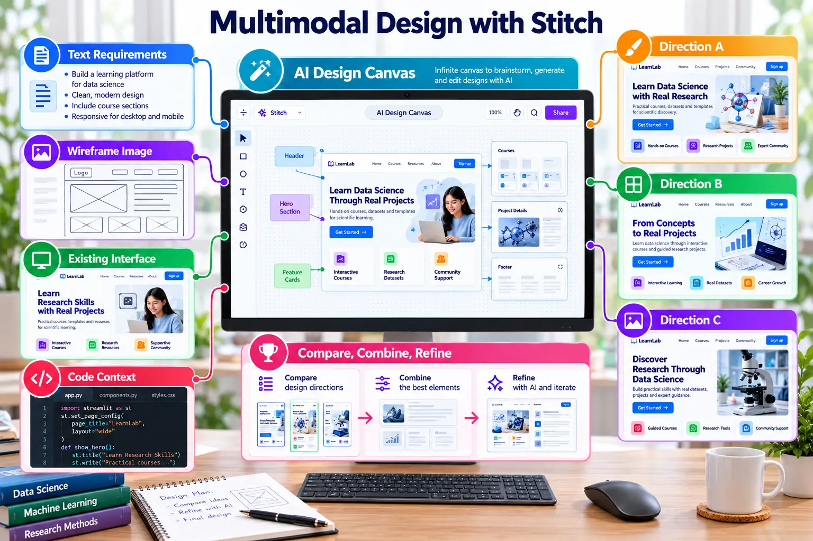

Multimodal Canvas and Design Directions
Combine requirements, wireframes, existing interfaces and code to explore multiple UI directions.

Context inputs
Text requirementsGoals, users, tasks and acceptance criteria.
Wireframe imagePreserve information structure without forcing styling.
Existing interfaceCommunicate relevant patterns without direct copying.
Code contextExpose real content and implementation constraints.
Explore and converge
Create three directions
Request alternatives in hierarchy or interaction.
Compare consistently
Score every direction against the same requirements.
Combine deliberately
Select specific strengths and record the rationale.
!
Originality: A screenshot provides context, not permission to copy another product.